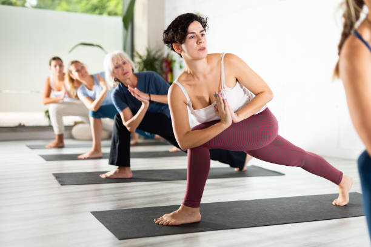
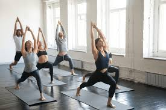
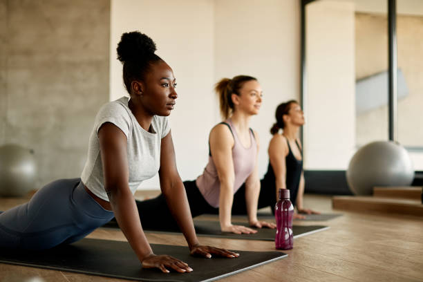
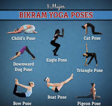

SERVICES
 HATHA YOGAHatha yoga A physical and mental practice that aims to prepare the body and mind |
KUNDALIN YOGAKundalini yoga A style that involves breathing meditation and chanting to activate the Kundalini |
 LYENGAR YOGAIyengar yoga is a Hatha yoga practice that uses props like wooden blocks and straps to help you achieve the correct postures. |
 ASHTANG YOGAAshtanga yoga A style that focuses on mindful movement and meditation. |
 VINYASA YOGAVinyasa yoga A style that can be good for an aerobic workout and increasing your heart rate |
 BIKRAM YOGABikram yoga A style named after its founder that is often practiced in a heated room |